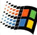

| Home => Linux vs. Windows |
L I N U X vs. W I N D O W S |
 |
| This page can serve as an introduction to Linux for Windows users. I created it while learning about Linux as a sort of personal cheat-sheet. The topics are in no particular order. Maybe someday . . . |
Flavors: (revised Jan.2004) )Both Windows and Linux come in many flavors. All the flavors of Windows come from Microsoft, the various distributions of Linux come from different companies (i.e.Lindows, Lycoris, Red Hat, SuSE, Mandrake, Knoppix, Slackware). Windows has two main lines: "Win9x", which consists of Windows 95, 98, 98SE and Me, and "NT class" which consists of Windows NT, 2000 and XP. Windows actually started, in the old days, with version 3.x which pre-dated Windows 95 by a few years.
The flavors of Linux are referred to as distributions (often shortened to "distros"). All the Linux distributions released around the same time frame will use the same kernel (the guts of the Operating System). They differ in the add-on software provided, GUI, install process, price, documentation and technical support. Both Linux and Windows come in desktop and server editions.
There may be too many distributions of Linux, it's possible that this is hurting Linux in the marketplace. I suspect that the lack of a Linux distro from a major computer company is also hurting it in the marketplace. Perhaps this will change with Novell's purchase of SuSE.
Linux is customizable in a way that Windows is not. There are many special purpose versions of Linux above and beyond the full blown distributions described above. For example, NASLite is a version of Linux that runs off a single floppy disk and converts an old computer into a file server. This ultra small edition of Linux is capable of networking, file sharing and being a web server.
Graphical User Interface: (updated June 20, 2005) Both Linux and Windows provide a GUI and a command line interface. The Windows GUI has changed from Windows 3.1 to Windows 95 (drastically) to Windows 2000 (slightly) to Windows XP (fairly large) and is slated to change again with the next version of Windows, the one that will replace XP. Windows XP has a themes feature that offers some customization of the look and feel of the GUI.
Linux typically provides two GUIs, KDE and Gnome. See a screen shot of Lycoris and Lindows in action from the Wal-Mart web site. The lynucs.org web site has examples of many substantially different Linux GUIs. Of the major Linux distributions, Lindows has made their user interface look more like Windows than the others. Here is a screen shot of Linux made to look like Windows XP. Then too, there is XPde for Linux which really makes Linux look like Windows. Quoting their web site "It's a desktop environment (XPde) and a window manager (XPwm) for Linux. It tries to make easier for Windows XP users to use a Linux box."
Mark Minasi makes the point (Windows and .NET magazine, March 2000) that the Linux GUI is optional while the Windows GUI is an integral component of the OS. He says that speed, efficiency and reliability are all increased by running a server instance of Linux without a GUI, something that server versions of Windows can not do. In the same article he points out that the detached nature of the Linux GUI makes remote control and remote administration of a Linux computer simpler and more natural than a Windows computer.
Is the flexibility of the Linux GUI a good thing? Yes and No. While advanced users can customize things to their liking, it makes things harder on new users for whom every Linux computer they encounter may look and act differently.
Text Mode Interface: This is also known as a command interpreter. Windows users sometimes call it a DOS prompt. Linux users refer to it as a shell. Each version of Windows has a single command interpreter, but the different flavors of Windows have different interpreters. In general, the command interpreters in the Windows 9x series are very similar to each other and the NT class versions of Windows (NT, 2000, XP) also have similar command interpreters. There are however differences between a Windows 9x command interpreter and one in an NT class flavor of Windows. Linux, like all versions of Unix, supports multiple command interpreters, but it usually uses one called BASH (Bourne Again Shell). Others are the Korn shell, the Bourne shell, ash and the C shell (pun, no doubt, intended).
Cost: For desktop or home use, Linux is very cheap or free, Windows is expensive. For server use, Linux is very cheap compared to Windows. Microsoft allows a single copy of Windows to be used on only one computer. Starting with Windows XP, they use software to enforce this rule (activation). In contrast, once you have purchased Linux, you can run it on any number of computers for no additional charge.
As of January 2005, the upgrade edition of Windows XP Home Edition sells for about $100, XP Professional is about $200. The "full" version of XP Home is about $200, the full version of XP Professional is $300. Windows Server 2003 Standard Edition with 10 Client licenses is about $1,100. Because they save $100 or so on the cost of Windows, Wal-Mart can sell a Linux based computer for $200 (without a monitor) whereas their cheapest Windows XP computer is $300 (as of January 2005).
The irony here is that Microsoft rose to dominance in large part by undercutting the competition on cost. Now Linux is poised to do the same thing.
You can buy a Linux book and get the operating system included with the book for free. You can also download Linux for free from each of the Linux vendors (assuming your Internet connection is fast enough for a 600 MB file and you have a CD burner) or from www.linuxiso.org. Both these options however, come without technical support.
You can purchase assorted distributions of Linux in a box with a CD and manuals and technical support for around $40 to $80 (some distributions may be less, others may be more). Regular updates and ongoing support range from $35 a year for a desktop version of Linux to $1,500 for a high-end server version. In August 2004 Red Hat started selling a desktop oriented version of Linux for under $6 per user per year.
After the initial cost (or lack thereof) of obtaining software, there is the ongoing cost of its care and feeding. In October 2002, ComputerWorld magazine quoted the chief technology architect at Merrill Lynch & Co. in New York as saying that "the cost of running Linux is typically a tenth of the cost of Unix and Microsoft alternatives." The head technician at oil company Amerada Hess manages 400 Linux servers by himself. He was quoted as saying "It takes fewer people to manage the Linux machines than Windows machines." Microsoft commissioned a study that (no surprise) found it cheaper to maintain Windows than Linux. However, one of the authors of the study accused Microsoft of stacking the deck by selecting scenarios that are more expensive to maintain on Linux.
I don't know if there will ever be an objective measure of the ongoing care and feeding costs for Linux vs. Windows. If there were however, it would have to consider:
Getting the Operating System: (last updated August 2004) It is hard to buy a new computer with Linux pre-installed. The major PC vendors sell only Windows based computers for home use (the Linux based machines they sell are servers). In August 2004 HP said it would be an exception to this rule and will soon offer a business notebook computer, the Compaq nx5000, with SUSE Linux pre-installed. A low end model is expected to sell for $1,140 -- about $60 less than a comparable model running Windows XP. HP was also scheduled to sell Linux PCs for consumers in Asia as of June 2004.
Wal-Mart sells new PCs with Linux pre-installed. In fact, if you need a new computer, the cheapest ones, bar none, sell for $200 at Wal-Mart. Wal-Mart sells different Linux distributions: Lycoris, Lindows and SuSE. In March 2004, they started selling Sun Microsystems' version of Linux, the Sun Java Desktop, starting at $298. In December 2004, Wal-Mart started selling a $498 laptop computer running Linspire.
Lindows (now Linspire) maintains a web page listing vendors that sell computers with Lindows pre-installed. Emperor Linux loads Linux distributions on new laptops from Dell, IBM, Sony and others. Pogo Linux sells custom-built desktops loaded with both Linux and Windows. Their main customers are universities and government agencies. A handful of companies sell notebooks with Lindows/Linspire pre-installed.
If you are up to installing Linux yourself, you can buy a new computer without any operating system from Dell or Wal-Mart, perfect for installing your favorite flavor of Linux. Dell sells their PowerEdge servers without an OS, Wal-Mart sells some of their Microtel computers without an OS.
And what about installing Windows and Linux? Installing Windows from scratch is much easier than installing Linux from scratch, in my opinion. If nothing else, installing Windows is always the same whereas the different distributions of Linux have their own installation programs (these may even change with different versions of the same distribution). You can't read an article on this however, without it saying how installing Linux is getting easier all the time.
Installing Linux on a computer without an OS is much easier than installing it on a machine with an existing OS that you want to preserve. The later should only be attempted by experts, it is all too easy to lose the pre-existing OS and setting up a dual-boot environment is tricky. In his Linux book, Mark Minasi said that installing Linux on a desktop computer was more likely to be successful than on a laptop computer.
Part of the difficulty in installing Linux is terminology and documentation. The install process is designed by Linux people for Linux people. A Windows-only person is likely to encounter terminology and concepts they are unfamiliar with. With Red Hat Linux 8, the booklet on how to install the OS is over a hundred pages.
Running from CD: One thing that Linux can do that Windows can not, is run from a CD. To run Windows, it has to first be installed to your hard disk. That said, if Windows is broken to the point that it can't start up, there is a free program called Bart's Preinstalled Environment (BartPE) that can run a few Windows programs from a bootable CD. However, this is not from Microsoft and it can only run a handful of programs that have been set up ahead of time for use with BartPE. BartPE fills an important need, but creating the CD is not trivial and it only works with Windows XP and 2003. The main point stands, in and of itself, Windows can not run from a CD, only from a hard disk.
Normally Linux also runs from a hard disk, but there are quite a few versions of Linux that run completely from a CD without having to be installed to a hard disk (the term for this is a "Live" CD). This is a great way for Windows users to experience Linux for the first time. Among the Linux distros that have a CD-only version are Knoppix, SuSE (called Live-Eval), Lindows and Slackware. The version of Lindows that runs from a CD used to be called Lindows CD and it was sold by Tiger Direct for $40. As of January 2004, it is called Lindows Live and can be purchased for $20 from Lindows.com or freely downloaded (see Lindows offers software for free over P2P from CNET News.com). SuSE's Live-Eval is free, I haven't checked the other distros. I tried SuSE Live Eval version 9 in October 2003 and had some gripes. FreeBSD, version of Unix (rather than Linux) also has LiveCD to run it from a bootable CD.
The CD based versions of Linux differ in their use of the hard disk. Some, such as Lindows, do not write anything at all to your hard disk, making it the safest and easiest way to experience Linux. The downside of this is speed (CDs are much slower than hard disks) and continuity (being able to save data between uses). Other versions, such as SuSE, do use your hard disk (SuSE creates over 200 MB worth of files). What you give up in safety, you gain in speed. For reviews of Linux distributions that run from a CD see A Taste of Linux by Jim Lynch at ExtremeTech January 23, 2004 and A Taste of Linux, Part Two By Jim Lynch March 5, 2004.
In addition to kicking the tires, a CD based version of Linux can also be used to insure your hardware is supported by Linux and possibly to recover files. If Windows is not able to boot up and there are files you need on your computer, booting Linux from a CD may offer the opportunity to copy files off the computer. This is problematic however with the NTFS file system. I found that the CD based versions of Lindows and SuSE could not read files stored in an NTFS partition. Perhaps others can.
Application software: There is more application software available for Windows.
Obtaining application software: If you buy a copy of Windows on a CD-ROM, you get no application software with it. If you buy a copy of Linux on a CD-ROM (or two or three) it typically comes with gobs of free application software. A new computer with Windows pre-installed may have additional application software, this is up to the PC vendor. I have seen a new Sharp laptop machine that came with no software other than Windows itself. In contrast, Sony VAIOs, for example, come with a lot of software. Often however, necessary software, such as the Adobe Acrobat reader, is not pre-installed by the PC vendor. Each Linux distribution comes in multiple flavors, the more expensive versions come with more application software.
Application software installation: The installation of applications under Windows, while not standardized, is generally consistent. Installing software under Linux varies with each distribution and is not nearly as simple, easy or obvious as Windows. Lindows lets users install software in a manner somewhat like Windows update - applications are downloaded and automatically installed. They charge for this service however. The May 20, 2004 issue of the Langa list newsletter had an interesting take on the difficulty installing software under Linux. In a July 4, 2004 review of Linux in the Washington Post (Linux, Still an Awkward Alternative), Rob Pegoraro called application software installation "Linux's biggest embarrassment" and I have no doubt that he is correct.
Viruses and Spyware: (Updated March 2005) There are many types of malicious software programs. The most common types are referred to as Viruses and Spyware. Spyware has become a generic term, much like "Xerox machine" (which is taken to mean any copying machine, not just those made by the Xerox corporation). The term "Spyware" now refers to a whole host of malicious software such as worms, Trojans, dialers, keystroke loggers, browser hijackers and, of course, actual Spyware. The vast majority of all malicious software (of all types) runs on Windows. I don't know the actual percentages, but it wouldn't surprise me if it was 98% or so.
Spyware on Windows has become such a problem that Microsoft purchased an anti-Spyware software company and released their product as the Microsoft Anti-Spyware program in early 2005. As this is written the product is still in beta form, but Microsoft has stated that it will be free even when complete. In my opinion, Spyware is the worst problem effecting Windows based computers. In addition to running an anti-virus program constantly, Windows users also need an anti-Spyware program constantly running in the background to protect them.
Users and Passwords: (updated June 2005) You have to log on to Linux with a userid and password; this is not true of Windows. Typically Windows 9x did not ask for a userid/password at boot time and, even if it did, it was easily bypassed. Windows 2000 and XP go both ways. While 2000 almost always required a userid/password at start-up time, you could assign a default userid/password pretty easily. A new Windows XP machine used by a home user is likely to not ask for a userid/password at start-up. However, this depends on the number of users defined to Windows. When you create a new user in XP the default is not to require a password for the user. Like Windows 2000, XP can also be set up with a default userid/password so that it will boot directly to the desktop.
Windows XP, 2000 and Linux all support different types or classes of users. Windows XP Home Edition supports Administrator class users that have full and total access to the system and restricted users that, among other restrictions, can't install software. Windows XP Pro and Windows 2000 support additional levels of users.
Both Linux and Windows can group users into groups (finally, something well named) and assign privileges to the group rather than to each individual user. Windows XP and 2000 come with some pre-defined user groups (such as Power Users), I don't think Linux does (but I'm not sure). In XP and 2000 user "Administrator" is a member of the Administrators group.
Linux privileges are basically whether you can read, modify or execute a file. Files in Linux are always owned by a specific user and group. Windows has similar file-related privileges but only when using the NTFS file system. The earlier FAT and FAT32 file systems had no file level security.
I'm told that Windows NTFS permissions are a bit more functional than those in Linux, but that Linux distributions are starting to use extended Access Control Lists as a part of the file system, bringing them more on par with NTFS. (I won't swear by this)
Very often Windows users use an Administrator class userid which gives viruses total access to their system (see Why you should not run your computer as an administrator from Microsoft). This obviates the security rules discussed above. In contrast, Linux users often run as regular non-root users which not only means better security it also means that, if they get a virus, the operating system greatly restricts what the virus can do.
I have tried a couple times to set up a Windows XP computer for use by a family, creating Administrator class userids for the parents and restricted userids for children. Both cases failed because there were too many programs that did not function correctly when run by a restricted Windows user (more details here). While Linux has supported the concept of root and restricted users from the get-go, this is a relatively new thing to Windows. It will be a long time before all Windows software is designed to be used by a restricted user. Until then, viruses and malware will have free reign on Windows machines. Certainly software written for Windows 95, 98 and Me expects total system access and may not work when run from a restricted userid.
See also Linux vs. Windows: Which Is More Secure?
from eWeek March 30, 2004 and
Windows v Linux security: the real facts
by John Lettice October 22, 2004 in The Register
Security Report: Windows vs Linux
by Nicholas Petreley October 22, 2004
Bugs:
All software has and will have bugs (programming mistakes).
Linux has a reputation for fewer bugs than Windows, but it certainly has its
fair share. This
is a difficult thing to judge and finding an impartial source on this
subject is also difficult. Fred Langa wrote an interesting article on
whether Linux or Windows has fewer bugs in Information
Week magazine January 27, 2003. The article also addressed whether known
bugs are fixed faster with Linux or Windows. In brief, he felt that bugs used to
be fixed faster in Linux, but that things have slowed down. See this
article too Security research suggests Linux has fewer flaws
December 13, 2004 from CNET News.com.

The difference in OS development methodologies may explain why Linux is considered more stable. Windows is developed by faceless programmers whose mistakes are hidden from the outside world because Microsoft does not publish the underlying code for Windows. They consider it a trade secret. In contrast, Linux is developed by hundreds of programmers all over the world. They publish the source code for the operating system and any interested programmer, anywhere in the world can review it. Besides the wide audience for peer review, there is likely to be pride of ownership on the part of the developers of Linux that can not exist with Windows. The official term is "egoboo" which refers to the rush a programmer gets from public recognition, especially for something done for free. Bruce Perens (Business Week magazine, March 3, 2003 issue) commented on why open source software works well:
...it taps into the true motivation of programmers in a way that corporations often don't. Programmers are like artists ... They like to showcase their best stuff for their peers. In open source, they can. But at most corporations, their best work is hidden behind locked and guarded doors.
The different OS development models are discussed in the excellent How Microsoft's Misunderstanding of Open Source Hurts Us All by Robert X. Cringely (October 23, 2003). The article argues in favor of Linux and justifiably ridicules comments on this subject by Steve Ballmer. It also includes a quote from Mr. Linux, Linus Torvalds:
"Because the software is free, there is no pressure to release it before it is really ready just to achieve some sales target. Every version of Linux is declared to be finished only when it is actually finished, which explains why it is so solid. The other reason why free software is better is because the personal reputation of the developer is attached to every release."
In March 28, 2003, Microsoft decreed that it will not issue a Windows NT4 bug fix for a security problem that effects Windows 2000, XP and NT4. They would prefer customers to move off of NT4, thus making Microsoft more money. It is their ball, their bat and their field. This is not true with an open source operating system such as Linux. No one can decree that bug will not be fixed in a specific version of Linux.
Software restrictions: A program written for Linux will not run under Windows and vice versa. For example, Microsoft makes a version of Office for Windows and another version for the Mac. They are two different products, each capable of only running on the operating system it was designed for. There is no version of Microsoft Office for Linux. Some programs, such as Firefox, are available for multiple operating systems (Firefox runs on Linux, Windows, Macs and more). Vendors of such software go to the trouble of making different versions for each supported operating system.
This is the rule, but there are a fair number of exceptions.
The most ambitious exceptions allow for installing one operating system under another. For example, on a computer running Linux (referred to as the host or native OS), you can install a copy of Windows (referred to, in this case, as the guest OS). In the Windows OS running under Linux, you can install any and all Windows programs. Somewhat like a split personality, one computer can run two operating systems at the same time. The guest operating system runs in an environment referred to as a virtual machine (VM). A company called VMware was the first to market with a virtual machine product (also called VMware) for personal computers. Virtual PC, competes with VMware. The two products differ in their supported host and guest operating systems. Virtual PC used to be from Connectix but Microsoft purchased them in 2003. The first release from Microsoft, Virtual PC 2004 will run Linux, but Microsoft does not provide support. Microsoft also lowered the price to $129.
Win4Lin, by NeTraverse is also a virtual machine product, but not as full featured as Virtual PC or VMware. It provides a virtual Windows environment under Linux for Windows 95/98/Me. At $89 though, it is much cheaper than the more feature laden virtual machine products and still lets you run two operating systems concurrently. (read a review). There are two flavors of Win4Lin, a standard desktop version and a terminal server version. For more see Software maker weds Linux PCs, Windows applications from CNET News.com April 22, 2004.
Less ambitious than virtual machine products (which let you run any application on the guest OS) are Linux distributions that attempt to run a handful of Windows programs directly. The goal here is enable migration of desktop users from Windows to Linux while still being able to run some Windows applications under Linux. The three Linux distributions that do this, all include a product called CrossOver Office from CodeWeavers that allows running Microsoft Word, Excel, PowerPoint, Outlook (from Office 97 and Office 2000), Visio 2000, Intuit's Quicken and Lotus Notes directly under Linux. The first Linux distribution to offer this feature was Lindows. Xandros Linux (previously Corel Linux) released their Desktop 1.0 distribution in October 2002 with better Windows compatibility than Lindows (see ExtremeTech review). SuSE Linux Office Desktop was released in January 2003 and can run some Microsoft Office programs (read more about this from ExtremeTech, USA Today, ZDNet).
For more on the subject of running selected Windows applications directly under Linux read: CrossOver Office Professional 3.0.1 by Jim Lynch at ExtremeTech (June 2004), Run Microsoft Office Without Windows from PC Magazine (April 2002), Breaking Windows: CodeWeavers and NeTraverse Bring Office to Linux from Open for Business (May 2002) and Linux Offers Better Windows Apps Without the Wait by Steven J. Vaughan-Nichols in eWeek (May 2004).
CrossOver also can be purchased separately (CodeWeavers sells it for $50) and installed on other Linux distributions. Support for Office XP is expected in the future. Front Page and Access are not supported. This approach does less but costs less - there is no need for a Windows license and no need for a VM product.
CrossOver is based on the Wine project, which attempts to allow a handful of important Windows applications to be more or less usable in a Linux environment. Wine is free software and is included with many GNU/Linux distributions. CrossOver Office is a commercial version of Wine that you have to buy. Wine does not, and will not, provide 100% compatibility; it will never run all Windows applications perfectly. Even applications that its runs well may not have all their features and functions available. Mary Jo Foley wrote that the Microsoft WGA (Windows Genuine Advantage) program looks for Windows programs running with Wine and purposely generates an error. See Microsoft Seeks to Bottle Up Open Source Wine (February 18, 2005).
TransGaming makes WineX which allows Linux users to run various Windows games that require OpenGL and DirectX. The combination of CrossOver Office and WineX should let you run many Windows programs under Linux and is likely to be cheaper than VMware or Virtual PC. In July 2004 TransGaming gave WineX a new name, Cedega, and announced support some DirectX 9 games. (Linux Takes on Windows Gaming from ExtremeTech July 28, 2004)
On yet another front, Ximian (owned by Novel) is developing Project Mono, which will allow Microsoft .Net applications to run on Linux. This should be very very exciting (at least to us nerds).
Microsoft has no interest in supporting Linux applications under Windows. The virtual machine products just mentioned however can do this.
There is yet another approach to crossing the OS divide that goes by the names Terminal Services, Server Based Computing and Thin Client Computing. On the Windows side, the Terminal Services feature in Windows 2000 Server and Windows 2003 server can be supplemented with software from other companies (Citrix being the market leader) to provide server-based Windows applications to non-Windows machines. I used an earlier version of the Citrix software, then known as WinFrame, to provide Windows NT server-based applications to Windows 95 and 98 clients. Quite cool. On the Linux/Unix side, Tarantella supports the display of Unix server applications on non-Unix, non-Linux machines.
Playing on each others network: Linux machines can participate on a Windows based network and vice versa. See Mixing Unix and Windows By Larry Seltzer (July 2002).
Hardware devices supported by the OS: More hardware works with Windows than works with Linux. This is because hardware vendors write drivers for Windows more often than they do for Linux. When Windows XP came out however, many existing peripherals would not work with it because XP required new drivers and the vendors had little motivation to write drivers for old hardware.
The poor hardware support in Linux is drastically illustrated in an article by Fred Langa. He wrote about problems getting nine different Linux distributions (versions) to work correctly with two different sound cards (one real, one virtual) that all versions of Windows, even back to Windows 95, dealt with perfectly (see Linux's Achilles' Heel, Information Week magazine. April 19, 2004).
Hardware the OS runs on: (Updated March 2005) Linux runs on many different hardware platforms, not so with Windows. For example, Windows NT used to run on MIPS CPUs until Microsoft changed their mind. It also used to run on Alpha CPUs, again, until Microsoft changed their mind. No one gets to change their mind with Linux. It runs on a very wide range of computers, from the lowest of the low to the highest of the high. The supported range of computers is all but stunning.
Because of its ability to run without a GUI, and thus need less hardware horsepower than Windows, Linux can run on very old personal computers such as 486 based machines. I took a Linux class where the server the students used was a 100 MHz Pentium. To get more mileage out of old hardware, Papa John's converted 2,900 pizzerias to Linux. On the high end, Linux runs natively on IBM mainframes (the Z series) and on other high end IBM servers. eBay runs their web site on Linux as does Google. IBM's family of "Blue Gene" supercomputers, used by Lawrence Livermore National Laboratory for nuclear weapons simulations, run Linux. NASA uses it on supercomputers that run space-shuttle simulations. On the small side, the iPodLinux Project created a version of Linux that runs on Apple iPods. NEC is working on Linux-based cell phones and Motorola is going to make Linux its primary operating system for smart cell phones. Debian Linux can run on on a computer the size of a deck of playing cards (100mm by 55mm) with an ARM cpu. In the home, Sony and Matsushita (parent company of Panasonic) will use Linux to build increasingly 'smart' microwave ovens, TVs and other consumer gizmos. Likewise MontaVista Software will release a version of its embedded Linux for use in consumer electronics devices. Web site linuxdevices.com seems to track this.
Clustering: Linux has an edge here. It has been used to make enormous clusters of computers. In October 2002, ComputerWorld magazine said: "Linux clusters provide supercomputer-type performance at a fraction of the expense." The same article reported that Merrill Lynch runs a cluster of 50 Linux computers. In March 2005, Forbes magazine reported that: "Linux now has become so technically powerful that it lays claim to a prestigious title--it runs more of the world's top supercomputers than any other operating system." (see Linux Rules Supercomputers by Daniel Lyons March 15, 2005).
Multiple Users: Linux is a multi-user system, Windows is not. That is, Windows is designed to be used by one person at a time. Databases running under Windows allow concurrent access by multiple users, but the Operating System itself is designed to deal with a single human being at a time. Linux, like all Unix variants, is designed to handle multiple concurrent users. Windows, of course, can run many programs concurrently, as can Linux. There is a multi-user version of Windows called Terminal Server but this is not the Windows pre-installed on personal computers.
Networking: They both do TCP/IP. Linux can do Windows networking, which means that a Linux computer can appear on a network of Windows computers and share its files and printers.
Hard disk partitions: Windows must boot from a primary partition. Linux can boot from either a primary partition or a logical partition inside an extended partition. Windows must boot from the first hard disk. Linux can boot from any hard disk in the computer.
Swap files: Windows uses a hidden file for its swap file. Typically this file resides in the same partition as the OS (advanced users can opt to put the file in another partition). Linux uses a dedicated partition for its swap file (advanced users can opt to implement the swap file as a file in the same partition as the OS).
File Systems: (updated March 2005) Windows uses FAT12, FAT16, FAT32 and/or NTFS with NTFS almost always being the best choice. Linux also has a number of its own native file systems. The default file system for Linux used to be ext2, now it is typically ext3.
File systems can be either journaled or not. Non-journaled systems are subject to problems when stopped abruptly. All the FAT variants and ext2 are non-journaled. After a crash, they should be examined by their respective health check utilities (Scan Disk or Check Disk or fsck). In contrast, when a journaled file system is stopped abruptly, recovery is automatic at the next reboot. NTFS is journaled. Linux supports several journaled file systems: "ext3", "reiserfs" and "jfs".
All the file systems use directories and subdirectories. Windows separates directories with a back slash, Linux uses a normal forward slash. Windows file names are not case sensitive. Linux file names are. For example "abc" and "aBC" are different files in Linux, whereas in Windows it would refer to the same file. Case sensitivity has been a problem for this very web page, the name of which is "Linux.vs.Windows.html". At times, people have tried to get to this page using "linux.vs.windows.html" (all lower case) which resulted in a Page Not Found error. Eventually, I created a new web page with the name in all lower case and this new page simply re-directs you to the real page, the one you are reading now (with a capital L and W).
As for crossing over, Linux can read/write FAT16 and FAT32. Some Linux distributions can read NTFS partitions, others can not. Captive-NTFS can be used to give Linux read/write access to NTFS partitions. I don't know much about it, but it does not seem to come pre-installed. Also, Windows XP SP2 caused it problems. For information on Linux and NTFS, see the Linux NTFS Project. On its own, Windows can not read partitions formatted with any Linux file system. However, Explore2fs by John Newbigin can be used to read Linux ext2 and ext3 partitions from Windows. Ext2Fsd claims to be an Ext2 File System Driver for Windows and there is another open source project for an Ext2 File System Driver for Windows. I have not tried these.
File Hierarchy: Windows and Linux
use different concepts for their file hierarchy. Windows uses a volume-based file
hierarchy, Linux uses a unified scheme. Windows
uses letters of the alphabet to represent different devices and different hard
disk partitions. Under Windows, you need to know what volume (C:, D:,...) a file resides on to select
it, the file's physical location is part of it's name. In Linux all directories are attached to the root directory,
which is identified by a forward-slash, "/".
For example, below are some second-level directories:
/bin/ ---- system binaries, user programs with normal user permissions
/sbin --- executables that need root permission
/data/ --- a user defined directory
/dev/ ---- system device tree
/etc/ ---- system configuration
/home/ --- users' subdirectories
/home/{username} akin to the
Windows My Documents folder
/tmp/ ---- system temporary files
/usr/ ---- applications software
/usr/bin - executables for programs with user permission
/var/ ---- system variables
/lib --- libraries needed for installed programs to run
Every device and hard disk partition is represented in the Linux file system as a subdirectory of the lone root directory. For example, the floppy disk drive in Linux might be /etc/floppy. The root directory lives in the root partition, but other directories (and the devices they represent) can reside anywhere. Removable devices and hard disk partitions other than the root are attached (i.e., "mounted") to subdirectories in the directory tree. This is done either at system initialization or in response to a mount command.
There are no standards in Linux for which subdirectories are used for which devices. This contrasts with Windows where the A disk is always the floppy drive and the C disk is almost always the boot partition.
Hidden Files: Both support the concept of hidden files, which are files that, by default, are not shown to the user when listing files in a directory. Linux implements this with a filename that starts with a period. Windows tracks this as a file attribute in the file metadata (along with things like the last update date). In both OSs the user can over-ride the default behavior and force the system to list hidden files.
Case: Case sensitivity is the same with commands as with file names. When entering commands in a DOS/command window under any version of Windows, "dir" is the same as "DIR". In Linux "dir" is a different command than "DIR".
Modems: To save money, many internal modems do not include their own processor, instead they rely on the main cpu in the computer for their processing needs. These cheap modems are referred to as "winmodems" because they typically include low level calls to the Windows operating system that can not be replicated in Linux. For the most part, winmodems will not work under Linux. If you need to run a winmodem under Linux see Linmodems.org and www.linuxant.com/drivers.
Scripting: Windows started with BAT files (a combination of OS commands and optionally its own language) and then progressed to Windows Scripting Host (WSH) which supports two languages, JavaScript and VB Script. Windows also has WMI, the Windows Management Interface which makes many functions available to scripts.
Linux, like all Unix variants, provides multiple scripting languages, referred to as shell scripts. Among them are the Bourne shell, the C shell, Perl, Python and Ruby. I have used the first three, but not Python and Ruby. I find the Linux scripting languages cruder than WSH but much more powerful than BAT files. They tend to use special characters instead of English commands and don't support objects (this only matters to programmers).
One scripting language that can run on both Linux and Windows is PHP. It always has to be installed under Windows, it may have to be installed under Linux. PHP is typically found running on Linux based web servers in combination with Apache, but it is capable of running "client side" (on your computer).
Printer Drivers: Every computer printer ships with drivers for last last few versions of Windows (at the time it was manufactured). Running the printer on a very old or too new version of Windows may or may not work. Still, this a far better situation than with Linux which does not support as many printers as Windows. In an environment with many Linux users, shared network printers a tech support staff, this should not be an issue as you can limit yourself to well supported printers. Home users of Linux however, will no doubt suffer from the relatively poor support for printers. Stephen Manes wrote in Forbes magazine (October 28, 2002) that "Linux printer drivers tend to handle the simplest of printing functions and leave out the rest".
Help: Stephen Manes wrote in Forbes magazine (October 28, 2002) that Linux "Help screens often omit everything but the most rudimentary information and the most arcane."
User Data: Windows allows programs to store user information (files and settings) anywhere. This makes it impossibly hard to backup user data files and settings and to switch to a new computer. In contrast, Linux stores all user data in the home directory making it much easier to migrate from an old computer to a new one. If home directories are segregated in their own partition, you can even upgrade from one version of Linux to another without having to migrate user data and settings.
Shutting Down: Both have to be told to shut down and for the same reason, to quiesce in-flight activity in an orderly manner. You shut down Windows thru the Start button, then select Shutdown. In both the KDE and Gnome GUIs for Linux, you shut the system down by first logging out (equivalent to logging off in Windows). In Gnome, you select the Halt option, in KDE, the shutdown option. Linux can also be shut down from a command prompt using the shutdown command. The shutdown command can either shut the system down immediately or be told to shut down at some time in the future. Windows XP also has a shutdown command, earlier versions of Windows did not.
Choosing Linux vs. Windows: On the Personal Computer show in December 2003 John C. Dvorak predicted a bright future for Linux. His main points being: it's free, the applications are getting more mainstream, Open Office is a "fabulous" product, the GUI is pretty much like Windows, it's high quality, bullet proof and resistant to the thousands of Windows viruses and worms. If he owned a company with thousands of PCs, he would put everyone on Linux.
To date the only organizations (that I've heard about) using hundreds or thousands of Linux based computers are government agencies in countries all over the world. They may be driven by cost and/or security concerns (practically speaking there are no Linux viruses). Some countries also may not like being beholden to a U.S. based company for so much of their software.
See More Balls Through Windows from The Economist April 20, 2004 on cfo.com. Is Microsoft finally about to face real competition in desktop-computer software? This article raises a point I agree with. The next version of Windows, the one that will replace XP, is not going to be delivered for a long time opening up a window of opportunity for Linux. In addition, the upcoming version of Windows is likely to be expensive and require new hardware, two other areas where Linux competes well. It may also involve too many changes. By the time it's delivered, more and more Linux distributions will look more like Windows, just as Microsoft rolls out a new user interface. People accustomed to the current Windows UI may resist the change.
However, Microsoft fights the spread of Linux at all costs. For example, when Thailand was going to make government subsidized Linux based computers available throughout the country, Microsoft cut a deal with the Thai Information, Communication and Technology Ministry. People in Thailand can buy Windows XP and Office XP (without Outlook) pre-installed, activated, and ready to run for the equivalent of $37 US dollars. See Microsoft offers cut-rate Windows from CNET News.com February 9, 2004. Then again, the governments of China, Japan and South Korea are teaming up to create their own Asian flavor of Linux.
Related Links |
Newer links are at the bottom
In November 2002, a security problem in a Microsoft FTP server resulted in the exposure of internal Microsoft documents. Among these was a white paper discussing the approach they used to convert Hotmail from UNIX to Windows 2000. The white paper includes these topics: Advantages of UNIX, Problems of Windows, Strengths of Windows.
Linux vs. Windows debate / discussion at DesktopLinux.com.
An article on the Wine
project from PC World Magazine, February 2002.
An article
on Lindows, including comments on Wine, by Fred Langa in Information Week,
December 2002.
Can I run Windows software on UNIX?
AnandTech. July 14th, 2002
Linux runs Office XP, but not Outlook.
April 23, 2003. Cross Over Office (about $55) by CodeWeavers enables Linux users to run Microsoft Office XP, but it is not possible to use Outlook XP or Access XP.
Outlook 2000 and Access 2000 are supported under Linux.
A Beginner's Guide to Linux by David Pogue in the New York Times. December 5, 2002
Windows is cheaper than Linux By Oliver Rist of ZDNet. December 9, 2002. The article says the cost of owning a server OS is mostly due to the man-hours spent on maintenance. For basic file and print serving, Windows is plug-and-play, meaning less time spent tweaking configurations. The author says that Linux servers take longer to configure and troubleshoot than Windows servers but notes that once this is done, Linux requires significantly less troubleshooting than Windows. However, this only applies to standard Linux installations. Any modifications though, and you are own your own. As to security, the author says that only someone smart, and therefore expensive, can manage Linux security. In contrast, Windows 2000 automatic security updates can be overseen by anyone. Often Windows security patches cause something else to drop dead, a huge waste of time, effort and expense. The author has almost never seen this happen with Linux.
Linux continues desktop march. ZDNet (UK). January 3, 2003. It was predicted that Linux will surpass the Mac OS as the number two desktop operating system. However, its growth is being held back by a lack of well-established applications. Despite the fact that there are Linux programs that compete reasonably well with Microsoft Office and Outlook, the article quotes someone as saying that companies often prefer to go with the most popular software. The fuzzy situation with technical support when running Microsoft Office directly under Linux (via Crossover Office) is also considered a hindrance. On the other hand, major Linux vendors are just starting to pay attention to the desktop market. HP will support desktops with Mandrake Linux and the governments of assorted countries are interested in open source software.
Friend or foe? April 10, 2003. The Economist magazine. The rise of Linux is dividing the computer industry into winners and losers. Linux is changing the dynamics of the computer business. Some of the industry's titans benefit from its advance, while others lose.
Why You Won't Be Getting A Linux PC by Lisa DiCarlo, Forbes magazine. June 17,2003
The Limitations Of Linux by Lisa DiCarlo, Forbes magazine. June 16, 2003
The November 25, 2003 issue of PC Magazine has an article comparing Linux and Windows. Michael Miller said "The complexity of Linux has kept people away, but that's all changing. Many current distributions look a lot like Windows". The article is If You Don't Do Windows Linux developers have polished their desktops, and those at Apple have created their richest OS to date, making both OSs more appealing than ever to the mainstream PC owner.
Crossover Office 2.1 Runs MS Windows Software on GNU-Linux Systems An Implementation of MS Windows APIs for Linux providing a Linux-based, Windows-software compatible environment by Mike Angelo November 10, 2003
Learn about Linux from the Linux Documentation Project. Much of it is for techies, but it includes Introduction to Linux - A Hands on Guide
Unix for Windows By Tom Yager in InfoWorld January 23, 2004. About running Windows applications on Linux and vice versa.
Linux and Windows Many articles about making the two Operating Systems work together.
Linux Loyalists Leery Forbes March 31, 2004. About the selling of Linux. How cheap does it need to be to compete with Windows?
Plugging the Linux holes April 30, 2004 CNET News.com The lack of some familiar applications is slowing Linux adoption.
Still another way to run Windows programs under
Linux? It's called David from a company called SpecOps. Too early to tell if
this is real or a hoax. David is not a Virtual Machine product, it is "system
service". Install David, and then install your Windows applications (or so
they say).
Finding the missing link in
Linux-Windows compatibility April 25, 2004 By Erwin Lemuel G. Oliva on INQ7.net
SpecOpS Labs Analysis: Is it real?
on Linuxelectrons.com
Linux vs Windows: Another Great OS Leap Forward On the Way?
April 21, 2004 on LinuxWorld.com
Why Windows Beats Linux by Scot Finnie in PC Today May 2004
CrossOver Office Professional 3.0.1 reviewed by Jim Lynch at ExtremeTech.com June 30, 2004. Included is a list of the Windows applications that it can run under Linux.
Desktop Linux a vehicle for pirating Windows CNET News.com September 29, 2004
Comparing Windows with Linux and UNIX from Steve Ballmer, head honcho at Microsoft. Consider the source. October 27, 2004
| michael @ michaelhorowitz.com | Home => Linux vs. Windows Top of Page |
Viewed
 times since May 26, 2005
times since May 26, 2005 www.michaelhorowitz.com/Linux.vs.Windows.html |
Created: September 2002 Last Updated: July 26, 2005 |

)window.location='http://i.walmart.com/i/p/00/66/04/48/10/0066044810417_AV_500X500.jpg'){kind=link}
)window.location='http://i.walmart.com/i/p/00/66/04/48/10/0066044810747_AV_500X500.jpg'){kind=link}